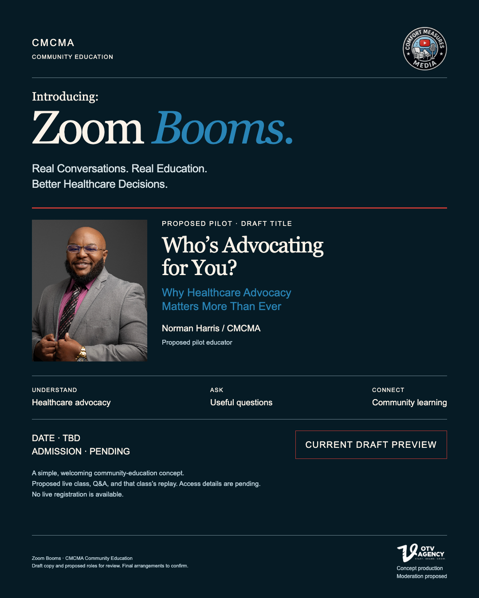

Understand advocacy.
Explore what advocacy can mean in everyday healthcare conversations and why it deserves more attention.
Healthcare. Advocacy. Resources.
Introducing:
Healthcare Education. Real Conversations.
Real conversations. Real education.
Better healthcare decisions.
Healthcare and advocacy education and resources, envisioned to be led by healthcare experts and subject-matter experts—for families, caregivers, professionals, and people who want to understand more.
The intention behind the series
CMCMA Edutainment Center is envisioned as welcoming healthcare and advocacy education and resources led by healthcare experts and subject-matter experts. The aim is useful learning, clear conversations, and connections to Norman’s broader events and summits. Admission, contributors, and the final format are still to be confirmed.
Explore what advocacy can mean in everyday healthcare conversations and why it deserves more attention.
Make room for questions, clearer communication, and understanding the needs people bring to care discussions.
Bring families, caregivers, professionals, and community voices into a welcoming educational conversation.
This is draft positioning for review. It does not confirm a schedule, ticket price, recurring frequency, class duration, or operating arrangement.
Proposed first conversation · Draft pilot title
The title and discussion areas below are draft preview copy, ready for partner review.
Norman Harris / CMCMA
Proposed pilot educator
Why Healthcare Advocacy Matters More Than Ever
A proposed educational conversation about understanding advocacy, finding room for questions, and communicating what matters.
Cory Crawford / OTV Agency
Production and moderation are proposed preview roles, with arrangements still to confirm.
A simple proposed experience
The aim is useful education and community engagement. The final format, admission, and access terms still need to be settled.
The earlier class concept included that purchased class’s replay. A larger replay library was explored separately as a future idea; it is not an available or included benefit here.
An educator opens a practical topic for community discussion.
A proposed Q&A creates room for the questions people bring.
Proposed alongside the class, with admission and access details still pending.
Current preview kit
Review the earlier series introduction, proposed pilot, and matching flyer as references for the updated concept. All event details remain provisional.
01 / Series reel
32 seconds · Community education and healthcare advocacy
02 / Pilot promo
16 seconds · Proposed conversation with Norman Harris

03 / Matching flyer
Draft title, proposed educator, and pending event details
Reels feature Cory’s supplied voice-over and music.
Illustrative AI footage shows fictional adult learners.
It does not depict actual attendees or testimonials.
Sample signup experience · Demo only
Try the sample details to see how a future signup could feel. This preview does not register you for a class.
No information is stored or sent. No payment, email, calendar event, or actual registration is created.
Demo complete
No registration was submitted. Your test details were cleared and were not stored or sent. There is no live event, payment, or follow-up email.
Before this becomes an event
Those were suggestions in the earlier conversation. Admission, duration, frequency, and dates have not been finalized.
No full-library access is available in this preview. A broader replay library was a separate future idea. The proposed class replay and its access period still need final terms.
The premium business cohort is a separate prior concept. This preview focuses on CMCMA Edutainment Center’s healthcare and advocacy education and resources.
This preview describes general educational conversations. It does not offer individual medical advice, CE credit, accreditation, eligibility determinations, or placement services.